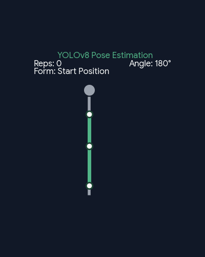
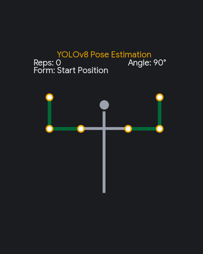

A full-stack desktop application combining computer vision pose estimation, automated OCR weight recognition, and real-time form scoring.
A comprehensive walkthrough of Raider Trainer's real-time pose tracking, OCR weight scanning, and UI capabilities.
Tracking upper-body workouts in real-time, enforcing correct form thresholds, and monitoring strength training progress.

Leverages YOLOv8 keypoints to compute 2D joint angles (shoulder, elbow, wrist). Categorizes form into Correct, Intermediate, and Wrong tiers in real-time.

Tracks bilateral upper-body exercises, evaluating dual elbow extension thresholds simultaneously without joint occlusion.
Uses Optical Character Recognition (OCR) algorithms to automatically scan and identify the printed numbers on hand weights (5, 10, or 15 lbs) prior to a routine.
Role-based access control locking users out after 3 failed attempts, accompanied by an Admin management dashboard.
Evaluates post-workout user feedback to suggest adjusted reps and weights, rendering daily historical progress on embedded charts.